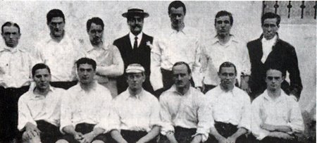
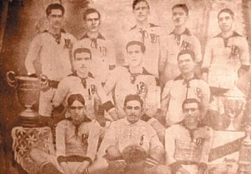

Início História Títulos Jogadores Torcida

O Corinthians foi fundado em 1º de setembro de 1910 por operários do bairro do Bom Retiro, em São Paulo.
Eram pintores, sapateiros e trabalhadores simples que queriam ter um time de futebol do povo.
O nome veio do Corinthian, um time inglês que visitou o Brasil naquele ano.

Só quatro anos depois, em 1914, o time dos operários já era campeão paulista.
Foi o começo de uma história de muitas glórias.
Sport Club Corinthians Paulista - desde 1910